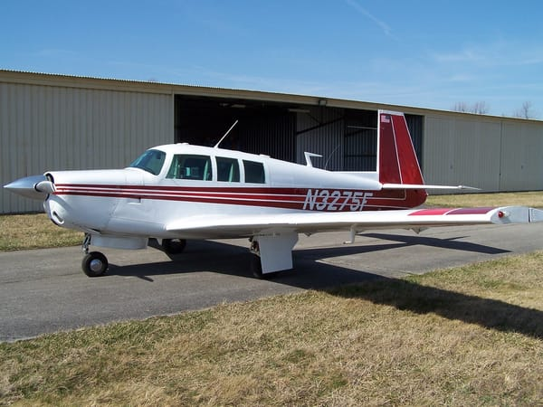
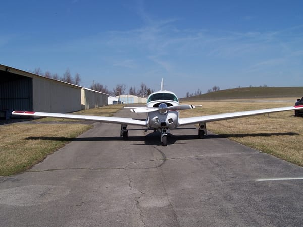
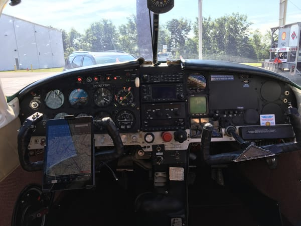
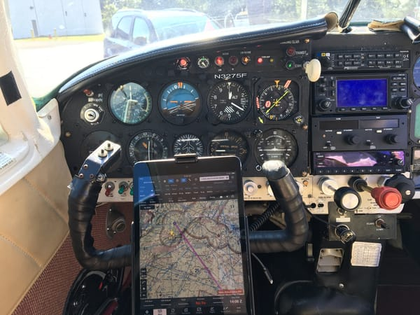
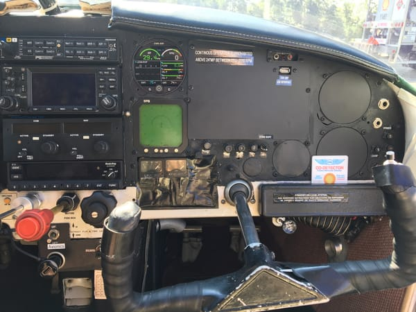
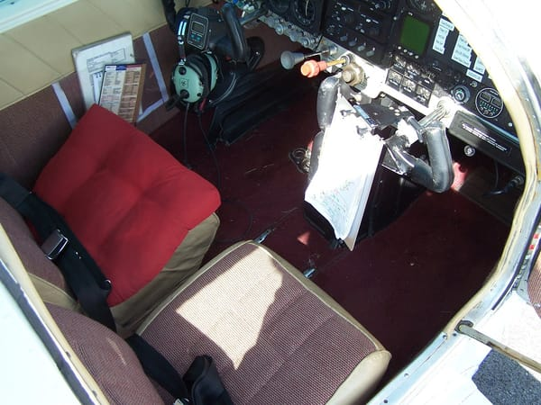

N3275F — Mooney M20F
$56.50/hr dry — tach time (about 0.9× Hobbs)
Cruise Speed
156 kts
at 75% powerFuel Burn
9–10 gal/hr
at 75% powerRange
918 nm
with reservesUseful Load
1,000 lbs
standard conditionsOverview
The Mooney M20F carries many 201 speed mods, including a single-piece belly, electric gear and flaps, a non-slaved HSI, and a Hartzell scimitar propeller. Recent improvements include a new audio panel with music and pilot/passenger isolation, an ADS-B out capable transponder, and an electronic starter system.
For economical operations the aircraft can be flown at 65% power, achieving 110kts on 6.5 gallons per hour — comparable to the operating cost of a Cessna 172.
Gallery






Specifications
Performance
- Cruise, 5,000ft
- 156 kts
- at 75% power
- 2400 rpm / 24" MP
- Cruise, 10,000ft
- 158 kts
- at 75% power
- 2600 rpm / 21" MP
- Fuel capacity
- 54.8 gal
- Endurance
- 5 hours
- Payload, full fuel
- 675 lbs
- Payload, ¾ tanks
- 757 lbs
Navigation and autopilot
- Garmin GNS 430 upgraded to WAAS, IFR certified — Garmin GNS 430W manual
- Mark 12D NAV/COM — Mark 12D manual (PDF)
- Century non-slaved HSI — Century HSI pilot guide (PDF)
- S-Tec 30 two-axis autopilot — S-Tec 30 manual (PDF)
- S-Tec GPS steering — GPSS switch guide (PDF)
Panel and situational awareness
- PMA 8000B audio panel — PMA 8000B pilot guide (PDF)
- ADS-B out capable transponder — KT-74 pilot guide (PDF)
- Stratus II ADS-B receiver — Stratus II pilot guide (PDF)
- iPad with ForeFlight — ForeFlight pilot guide
- CGR-30P engine monitor — CGR-30P operating instructions (PDF)
- WX900 Stormscope — WX900 Stormscope manual (PDF)